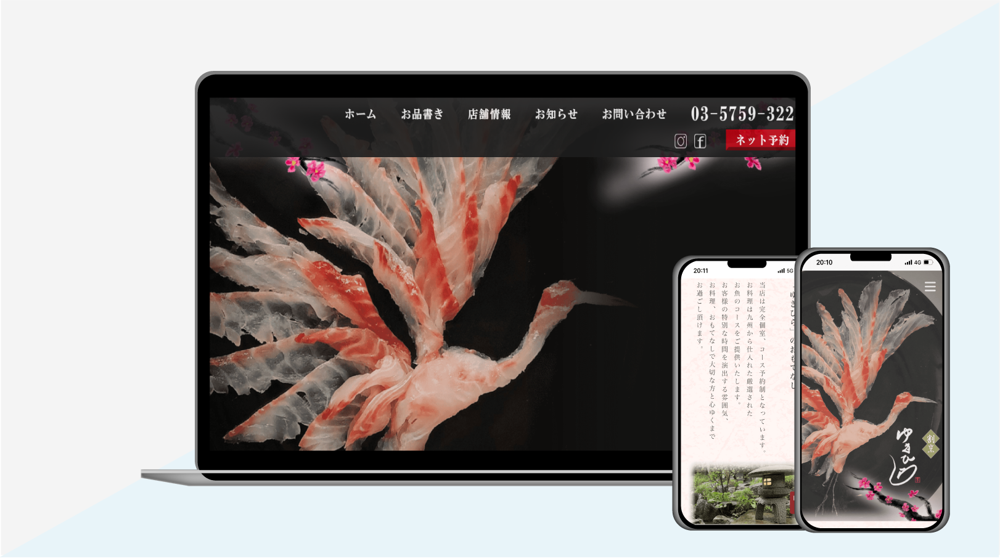
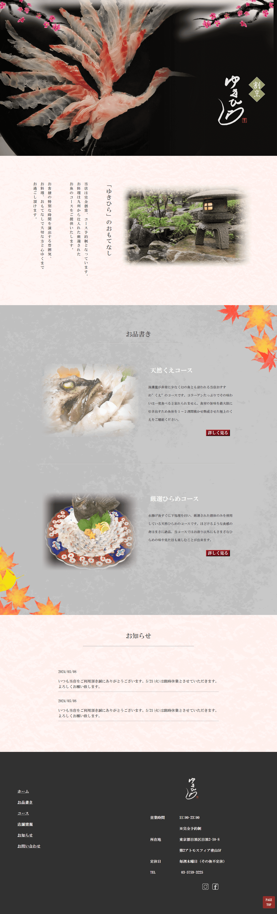
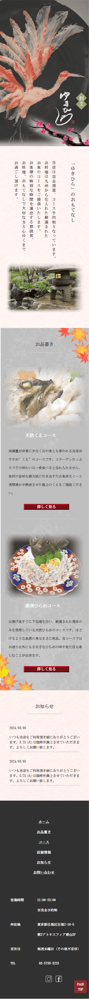

架空の和食割烹「ゆきひら」のサイト
| コンセプト | 目黒にある完全個室の予約制の海鮮料理割烹。こだわった食材と確かな技術でお客様に 至福のひと時を提供する。 |
|---|---|
| ターゲット | 目黒が活動圏の30 ～ 50 代の方がターゲット。お祝い事や個室でお話をしながら食事が できる場所を探している方 |
| 目的 | サイトを通じてお店の認知度を上げ、メニューや雰囲気を知ってもらい新規顧客獲得に コミットする。 |
| デザイン | お店の雰囲気を伝える写真素材の加工や背景画像、ロゴなどにこだわりました。和の 雰囲気を出す為に縦書き文字を入れるなど少し高級感が出るように作りました。 |
制作期間
| 企画 | 2日 |
|---|---|
| 素材集め | 4日 |
| デザインカンプ | 6日 |
| コーディング | 5日 |
PCデザイン width=1920px
レスポンシブデザイン width=680px
